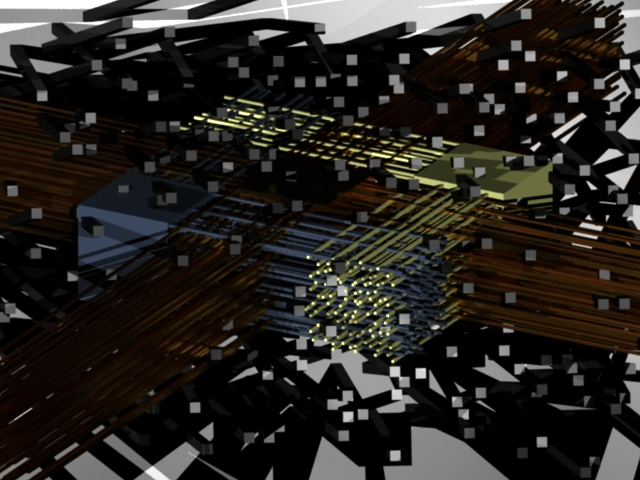
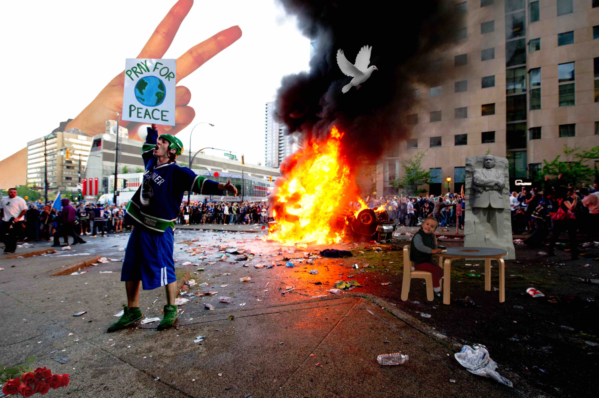

"Still Life With Clay Pipes"
Created and rendered in Autodesk Maya, this piece is
a virtual replica of the famous painting "Still Life With
Clay Pipes" by Pieter Claesz. The original image was
created in 1636, using oil painting.

Infinite Collisions
Created and rendered in Autodesk Maya, this piece is
primarily made up of extrusions. It's purpose is to
disguise the relationship between background and
foreground, as many of the extrusions stem from
the background plane.

Boundaries
Created and rendered in Autodesk Maya, this piece is
meant to provide a bridge between the depths of reality
and imagination. The inside of the room represents a
seemingly normal world, while the outside of the room
takes the form of a virtual domain.

Pray for Peace
Created with Adobe Photoshop, this piece was
conceived around the time of the riots in
Ferguson, Missouri. It's purpose is to highlight
the irony of using violence and aggression to
progress what is supposed to be a peaceful
movement.
